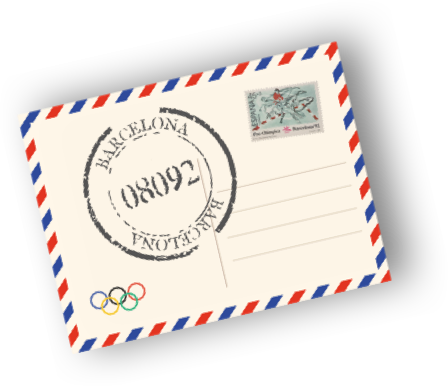
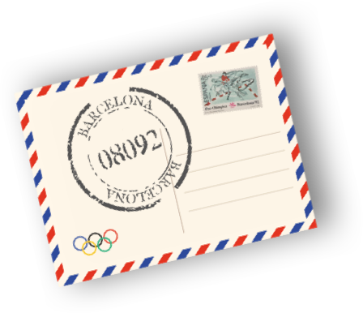
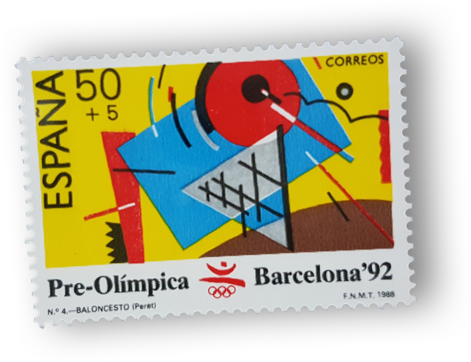
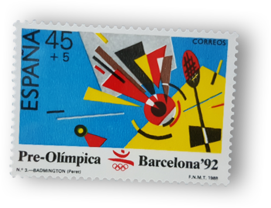
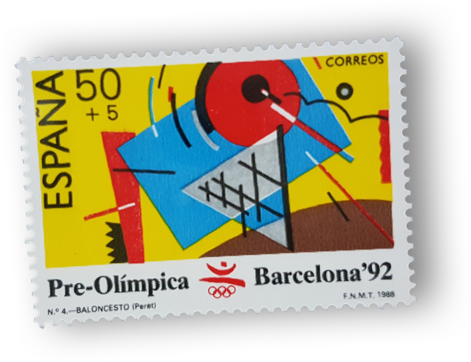
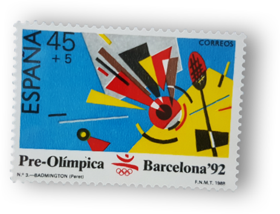

Ressorgiment
Els Jocs Olímpics de Barcelona van celebrar-se entre el 25 de juliol i el 9 d'agost de 1992. La designació com a ciutat organitzadora comportà una profunda transformació urbanística, social i la creació de nous equipaments. Aquest esforç es complementà amb una acurada imatge corporativa, sota la voluntat de presentar una ciutat moderna i actual. I en aquest sentit, la filatèlia olímpica va tenir un gran paper.

Barcelona, doble capitalitat olímpica
L'esdeveniment esportiu l'organitzava el COOP (Comitè Organitzador de l'Olimpíada Popular) amb el suport del govern de la II República. La competició havia d'aplegar més de 6.000 esportistes nacionals i internacionals de diferents categories. Es tractava d'una alternativa als Jocs Olímpics de Berlín, celebrats aquell mateix any. Malauradament l'esdeveniment va quedar suspès per l'inici de la Guerra Civil.
Molt abans del 1992, Barcelona va ser nomenada seu de l'Olimpíada Popular, concretament entre el 19 i el 26 de juliol del 1936.
Vinyeta de 10 cèntims emesa per recaptar diners per a la celebració de l'Olimpíada Popular, 1936.Barcelona '92
Barcelona va ser escollida seu de la XXV edició dels Jocs d'Estiu durant la 91a sessió del Comitè Olímpic Internacional, celebrada el 17 d'octubre de 1986 a Lausana, Suïssa. La nominació va despertar l'eufòria per tota Catalunya.
S'iniciava una carrera contra-rellotge per acollir el que serien "els millors Jocs Olímpics de la història", segons declaracions de Joan Antoni Samaranch.


El desplegament dels serveis postals
L'enviament de telegrames, postals exprés, cartes, tèlex o faxos augmentaren considerablement al llarg dels Jocs Olímpics, fet que obligà a reforçar els serveis postals habituals.
 

També per a l'ocasió, Correus va habilitar un codi postal propi, el 08092, per agilitzar la distribució de la correspondència entre el comité organitzador, les delegacions participants i els mitjans de comunicació. Només va funcionar entre l'1 de juliol i el 15 de setembre del 1992.

Les Olimpíades Culturals
La candidatura olímpica contemplà canvis en matèria de transports, urbanisme, comunicacions i infraestructures. A més, però, també es van assolir millores en matèria de política cultural.

Les Olimpíades Culturals
L'Olimpíada cultural es desenvolupà com a complement a l'activitat olímpica, entre 1989 i 1992. Durant aquest temps s'estructurà un programa ampli d'espectacles de dansa, teatre, música i exposicions, amb l'objectiu de reforçar la imatge olímpica. La iniciativa culminà amb l'organització del Festival Olímpic de les Arts, amb més de 200 activitats, des de l'abril fins a l'agost de 1992. Entre elles, s'organitzaren exposicions filatèliques i la presentació de segells de temàtica olímpica.
Olymphilex ‘92
En el marc de les activitats programades en l'Olimpíada Cultural es presentà la cinquena edició de l'Exposició Mundial de Filatèlia Olímpica i Esportiva, a la Facultat de Ciències Econòmiques de la Universitat de Barcelona. Un gran nombre d'expositors, col·leccionistes i comerciants de l'àmbit filatèlic van exhibir segells i material postal de temàtica olímpica.
Dins del programa d'actes, la comissió presentà dos segells amb una tirada de 2,500,000 d'exemplars cadascun i una medalla commemorativa, gràcies a la col·laboració de Correus i la Fábrica Nacional de Moneda y Timbre (FNMT).
Les emissions filatèliques preolímpiques
La primera sèrie va editar-se l'any 1988 per la FNMT, a Madrid. L'estil trencador de les il·lustracions de Pere Torrent Peret el van fer mereixedor d'un premi Laus de disseny gràfic, per "la introducció d’una onada de frescor al disseny filatèlic". Després de l'èxit d'aquesta primera entrega n'arribarien set més, amb la participació de nous dissenyadors.

L'emblema va ser dissenyat per Josep M. Trias, i representa una figura saltant sobre els arcs olímpics.
El disseny sintetitza la figura humana sense concretar el gènere, transmetent el sentit humà dels Jocs. Els colors blau, groc i vermell representen el mar, el sol i la vida, característics d'una ciutat mediterrània.
 


